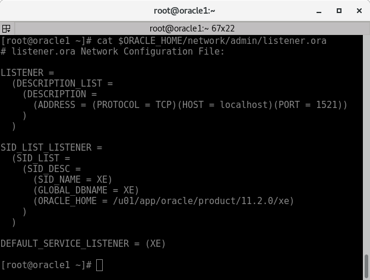
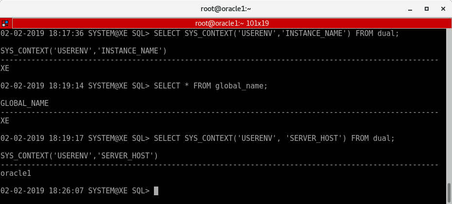
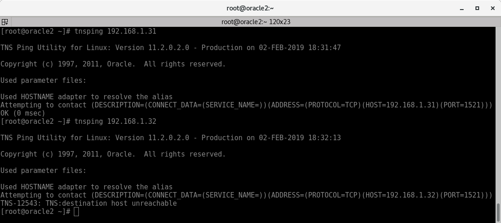
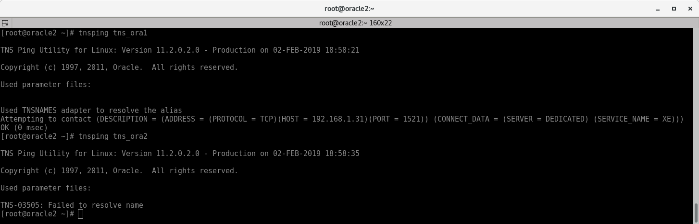

Interconexión de Servidores de Bases de Datos¶
Las interconexiones de servidores de bases de datos son operaciones que pueden ser muy útiles en diferentes contextos. Básicamente, se trata de acceder a datos que no están almacenados en nuestra base de datos, pudiendo combinarlos con los que ya tenemos.
En esta entrada veremos varias formas de crear un enlace entre distintos servidores de bases de datos.
Interconexión entre dos BBDD Oracle¶
Entorno Vagrant¶
Tenemos 2 máquinas Centos con Oracle 11g XE levantadas mediante Vagrant y VirtualBox. Una la utiliaremos como "servidor" para la interconexión de datos y otra como "cliente".
- Fichero Vagrant:
1 2 3 4 5 6 7 8 9 10 11 12 13 14 15 16 17 18 19 20 21 22 23 24 25 26 27 28 29 30 31 32 33 34 35 | Vagrant.configure("2") do |config| config.vm.define "nodo1" do |nodo1| config.vm.provider "virtualbox" do |vb| vb.name = "oracle1" vb.memory = 2048 vb.cpus = 1 end nodo1.vm.box = "neko-neko/centos6-oracle-11g-XE" nodo1.vm.hostname = "oracle1" nodo1.vm.network "public_network", bridge: "wlan0", use_dhcp_assigned_default_route: true end config.vm.define "nodo2" do |nodo2| config.vm.provider "virtualbox" do |vb| vb.name = "oracle2" vb.memory = 2048 vb.cpus = 1 end nodo2.vm.box = "neko-neko/centos6-oracle-11g-XE" nodo2.vm.hostname = "oracle2" nodo2.vm.network "public_network", bridge: "wlan0", use_dhcp_assigned_default_route: true end end |
Mi red es una 192.168.1.0.
- Acciones iniciales en la máquina:
1 2 3 4 5 6 7 8 9 10 11 12 13 | sudo su - yum -y update yum -y install nano rlwrap sed -ri 's/NLS_LANG=.*/NLS_LANG="SPANISH_SPAIN.AL32UTF8"/g' /etc/profile.d/oracle_env.sh export NLS_LANG='SPANISH_SPAIN.AL32UTF8' rlwrap sqlplus sys/vagrant as sysdba cat <<EOF>>$ORACLE_HOME/sqlplus/admin/glogin.sql alter session set NLS_DATE_FORMAT = 'DD-MM-YYYY HH24:mi:ss'; set sqlprompt "_DATE _USER'@'_CONNECT_IDENTIFIER 'SQL'> " set pagesize 2000 linesize 100 set serveroutput on EOF |
Fichero listener.ora en "servidor"¶
Este apartado es para el servidor de escucha.
Lo primero será modificar el fichero de configuración listener.ora. En este fichero podremos configurar el interlocutor de oracle(listener) el cual se encarga de aceptar peticiones remotas desde la red(TCP). Lo encontraremos en el directorio $ORACLE_HOME/network/admin.
- Quedaría algo así:
1 2 3 4 5 6 7 8 9 10 11 12 13 14 15 16 17 | LISTENER = (DESCRIPTION_LIST = (DESCRIPTION = (ADDRESS = (PROTOCOL = TCP)(HOST = localhost)(PORT = 1521)) ) ) SID_LIST_LISTENER = (SID_LIST = (SID_DESC = (SID_NAME = XE) (GLOBAL_DBNAME = XE) (ORACLE_HOME = /u01/app/oracle/product/11.2.0/xe) ) ) DEFAULT_SERVICE_LISTENER = (XE) |
Lo que tenemos lo dividimos en 2 partes:
-
LISTENER: Es dónde especificamos los protocolos,IPS o nombres(HOST), puertos y etc. desde los que se podrán conectar remotamente a este servidor.
-
SID_LIST_LISTENER: Son los nombres de los servicios de escucha dónde especificamos los nombres de las instancias y directorio de las bases de datos.

- Ahora reiniciamos el servicio del listener:
1 | lsnrctl stop && lsnrctl start
|
- Vemos el estado del listener:
1 | lsnrctl status |

- Para averiguar el
SID_NAME,GLOBAL_DBNAMEy el nombre del servidor:
1 2 3 4 5 | SELECT SYS_CONTEXT('USERENV','INSTANCE_NAME') FROM dual; SELECT * FROM global_name; SELECT SYS_CONTEXT('USERENV', 'SERVER_HOST') FROM dual; |

¿ Qué es el SID_NAME ?
Identificador del Sistema Oracle: Es un nombre único para una instancia de Oracle Database en un host concreto. El identificador del sistema Oracle (SID) ayuda a identificar el archivo de control así como a ubicar los archivos necesarios para abrir la base de datos. Suele ser el mismo que el del GLOBAL_DBNAME.
Fichero tnsnames.ora en "cliente"¶
Este apartado es para el cliente desde el cual nos conectaremos.
Primero realizaremos varias pruebas para verificar que tenemos conexión con el servidor de escucha.
- Pruebas con
tnsping:
1 | tnsping 192.168.1.31
|

Como vemos el primer intento a 192.168.1.31(Servidor de escucha) tiene éxito, pero intentamos realizar esta operación a una IP inexistente y da error.
- Pruebas de conexión con
sqlplus:
1 | rlwrap sqlplus system/vagrant@//192.168.1.31:1521/XE |

Podemos ver que estamos conectado al servidor de escucha con nombre "oracle1".
Ahora para realizar la interconexión del servidor necesitamos configurar el fichero tnsnames.ora. En este fichero podemos configurar y "mapear" los nombres de los servicios que está escuchando el servidor. Lo encontraremos en el directorio $ORACLE_HOME/network/admin.
- Quedaría algo así:
1 2 3 4 5 6 7 8 | tns_ora1 = (DESCRIPTION = (ADDRESS = (PROTOCOL = TCP)(HOST = 192.168.1.31)(PORT = 1521)) (CONNECT_DATA = (SERVER = DEDICATED) (SERVICE_NAME = XE) ) ) |

- Volvemos a realizar una prueba con
tnspingpero esta vez usando el nombre especificado:
1 | tnsping tna_ora1 |

Como vemos el primer intento a "tns_ora1"(Servidor de escucha) tiene éxito, pero intentamos realizar esta operación a un nombre no configurado y da error.
Configuración de interconexión mediante enlace de base de datos¶
Ahora necesitamos configurar dicho enlace en el cliente desde "sqlplus".
- Configuración enlace:
1 2 3 4 | CREATE DATABASE LINK link_ora1 CONNECT TO scott IDENTIFIED BY tiger USING 'tns_ora1'; |
SELECT * FROM scott.dept@link_ora1;
Interconexión entre dos BBDD Postgres¶
Interconexión entre BBDD Oracle y Postgres(o MariaDB) con Heterogeneus Services¶
Creación squema scott:
CREATE USER SCOTT IDENTIFIED BY tiger DEFAULT TABLESPACE USERS TEMPORARY TABLESPACE TEMP PROFILE DEFAULT;
GRANT CONNECT, RESOURCE TO SCOTT;
ALTER USER SCOTT ACCOUNT UNLOCK;
CREATE TABLE SCOTT.DEPT ( DEPTNO NUMBER(2), DNAME VARCHAR2(14), LOC VARCHAR2(13), CONSTRAINT PK_DEPT PRIMARY KEY (DEPTNO) );
INSERT INTO SCOTT.DEPT VALUES (10, 'ACCOUNTING', 'NEW YORK'); INSERT INTO SCOTT.DEPT VALUES (20, 'RESEARCH', 'DALLAS'); INSERT INTO SCOTT.DEPT VALUES (30, 'SALES', 'CHICAGO'); INSERT INTO SCOTT.DEPT VALUES (40, 'OPERATIONS', 'BOSTON');
COMMIT;
conn scott/tiger
CREATE USER SCOTT IDENTIFIED BY tiger DEFAULT TABLESPACE USERS TEMPORARY TABLESPACE TEMP PROFILE DEFAULT;
GRANT CONNECT, RESOURCE TO SCOTT;
ALTER USER SCOTT ACCOUNT UNLOCK;
CREATE TABLE SCOTT.EMP ( EMPNO NUMBER(4), ENAME VARCHAR2(10), JOB VARCHAR2(9), MGR NUMBER(4), HIREDATE DATE, SAL NUMBER(7, 2), COMM NUMBER(7, 2), DEPTNO NUMBER(2), CONSTRAINT FK_DEPTNO FOREIGN KEY (DEPTNO) REFERENCES SCOTT.DEPT (DEPTNO), CONSTRAINT PK_EMP PRIMARY KEY (EMPNO) );
INSERT INTO SCOTT.EMP VALUES(7369,'SMITH','CLERK',7902,TO_DATE('17-DIC-1980','DD-MON-YYYY'),800,NULL,20); INSERT INTO SCOTT.EMP VALUES(7499,'ALLEN','SALESMAN',7698,TO_DATE('20-FEB-1981','DD-MON-YYYY'),1600,300,30); INSERT INTO SCOTT.EMP VALUES(7521,'WARD','SALESMAN',7698,TO_DATE('22-FEB-1981','DD-MON-YYYY'),1250,500,30); INSERT INTO SCOTT.EMP VALUES(7566,'JONES','MANAGER',7839,TO_DATE('2-ABR-1981','DD-MON-YYYY'),2975,NULL,20); INSERT INTO SCOTT.EMP VALUES(7654,'MARTIN','SALESMAN',7698,TO_DATE('28-SEP-1981','DD-MON-YYYY'),1250,1400,30); INSERT INTO SCOTT.EMP VALUES(7698,'BLAKE','MANAGER',7839,TO_DATE('1-MAY-1981','DD-MON-YYYY'),2850,NULL,30); INSERT INTO SCOTT.EMP VALUES(7782,'CLARK','MANAGER',7839,TO_DATE('9-JUN-1981','DD-MON-YYYY'),2450,NULL,10); INSERT INTO SCOTT.EMP VALUES(7788,'SCOTT','ANALYST',7566,TO_DATE('09-DIC-1982','DD-MON-YYYY'),3000,NULL,20); INSERT INTO SCOTT.EMP VALUES(7839,'KING','PRESIDENT',NULL,TO_DATE('17-NOV-1981','DD-MON-YYYY'),5000,NULL,10); INSERT INTO SCOTT.EMP VALUES(7844,'TURNER','SALESMAN',7698,TO_DATE('8-SEP-1981','DD-MON-YYYY'),1500,0,30); INSERT INTO SCOTT.EMP VALUES(7876,'ADAMS','CLERK',7788,TO_DATE('12-ENE-1983','DD-MON-YYYY'),1100,NULL,20); INSERT INTO SCOTT.EMP VALUES(7900,'JAMES','CLERK',7698,TO_DATE('3-DIC-1981','DD-MON-YYYY'),950,NULL,30); INSERT INTO SCOTT.EMP VALUES(7902,'FORD','ANALYST',7566,TO_DATE('3-DIC-1981','DD-MON-YYYY'),3000,NULL,20); INSERT INTO SCOTT.EMP VALUES(7934,'MILLER','CLERK',7782,TO_DATE('23-ENE-1982','DD-MON-YYYY'),1300,NULL,10);
COMMIT;